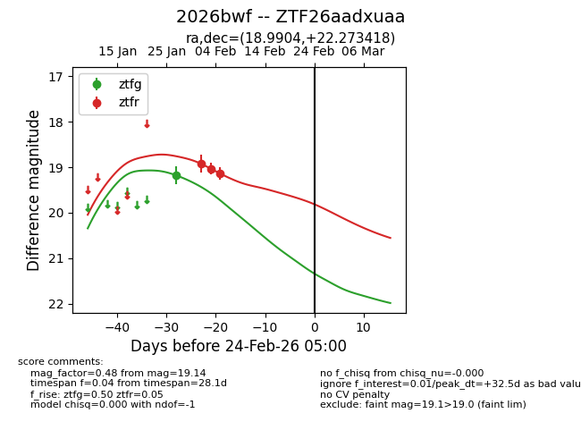
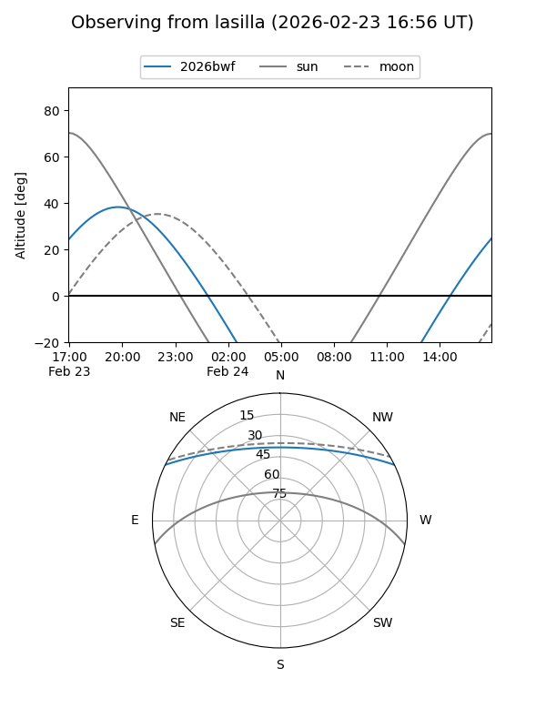
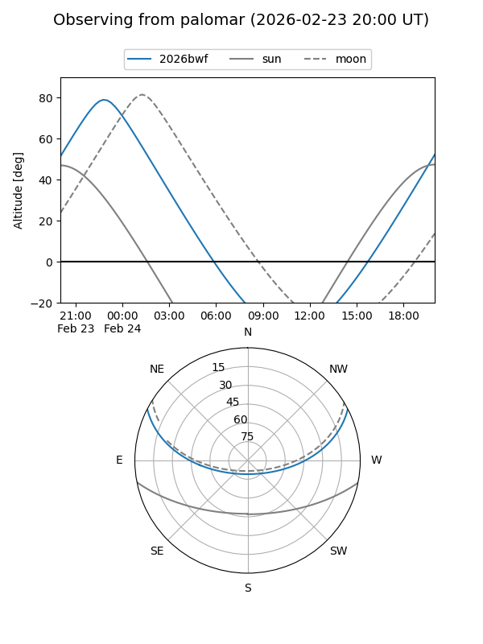

2026bwf
Target 2026bwf at 2026-02-24 09:08
Aliases and brokers:
FINK: link
Lasair: link
ALeRCE: link
TNS: link
YSE: link
alt names
ZTF26aadxuaa (ztf,fink_ztf)
2026bwf (tns,yse)
Coordinates:
equatorial (ra, dec) = 18.9904,+22.27342
equatorial (HMS+DMS) = 01:15:57.69,+22:16:24.31
galactic (l, b) = (130.3714,-40.24382)
Flags:
Photometry:
last ztfg=19.18, ztfr=19.14
1 ztfg, 3 ztfr detections
Lightcurve

Visibility


Additional plots